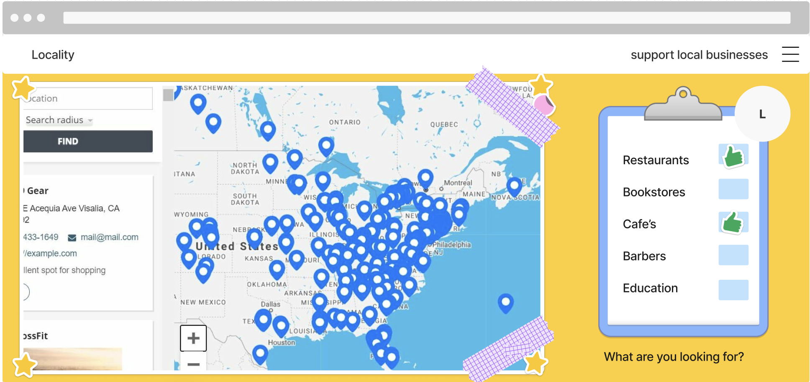
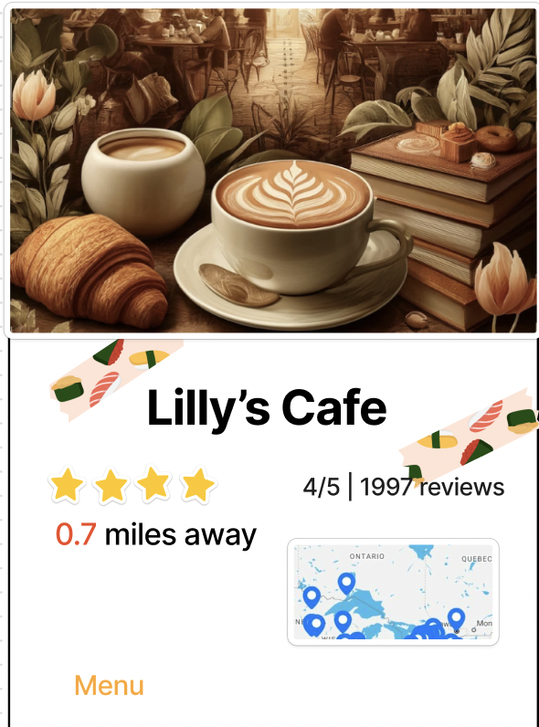

Project Overview
Locality emerges as an innovative web application revolutionizing the way users interact with local businesses and engage with their communities. Positioned as a digital nexus for discovering nearby services and goods, Locality aims to streamline the process of supporting local economies and nurturing community ties. Through its user-centric interface comprising an interactive map, comprehensive business profiles, and dynamic search filters, Locality empowers users to seamlessly locate desired amenities, whether they're familiar locals or wandering travelers.
Beyond mere information provision, Locality endeavors to cultivate connections and enrich user experiences by integrating user-generated content, such as reviews and recommendations, and facilitating meaningful interactions among community members. With an unwavering commitment to inclusivity, convenience, and fostering local commerce, Locality stands poised to become an indispensable tool for individuals seeking to explore, connect, and contribute to the vibrancy of their local communities, thereby enhancing the social fabric of neighborhoods and cities worldwide. Our aim is to empower individuals to effortlessly discover and support local businesses while fostering meaningful connections within their communities through the innovative platform of Locality.
Key Components
Interactive Map: At the heart of Locality lies the Interactive Map, a dynamic tool designed to provide users with a visual representation of nearby businesses. With intuitive navigation and real-time geolocation tracking, users can effortlessly explore their surroundings and discover a diverse range of local services and goods. The Interactive Map offers detailed insights into each business, including essential information such as operating hours, contact details, and user ratings. By offering a seamless and immersive browsing experience, the Interactive Map encourages users to explore their neighborhoods and support local enterprises with ease and confidence.
Business Profiles: Another vital component of Locality is the Business Profiles feature, offering users detailed insights into each listed local business. These profiles serve as virtual storefronts, providing users with essential information about a business's offerings, services, and amenities. Integrated with authentic data from sources like Google Places API, Business Profiles ensure that users have access to up-to-date and accurate information, empowering them to make informed decisions. User-generated content, such as reviews and ratings, further enriches these profiles, fostering transparency and trust within the community.
Customizable Filter Function: Empowering users to tailor their search experience, Locality incorporates a Customizable Filter Function that allows users to refine their search based on specific preferences and criteria. Whether users are searching for a specific business type, rating, or distance, the Filter Function ensures that search results are personalized to meet their unique needs. By offering a highly customizable and user-centric search experience, Locality enhances user satisfaction and facilitates more meaningful connections between consumers and local businesses.
Data Requirements
Local Business Database: Central to Locality's functionality is a comprehensive database of local businesses, encompassing a plethora of information vital for powering its search and discovery features. This database includes detailed profiles of businesses, including names, addresses, contact information, operating hours, and descriptions of services or products offered. Precise geolocation data, comprising GPS coordinates and addresses, ensures accurate mapping and navigation for users seeking nearby businesses. Integration with external APIs, such as Google Places, enriches these profiles with additional details like photos, user ratings, and reviews, enhancing the user's decision-making process. Regular updates and data verification procedures maintain the accuracy and reliability of the database, ensuring that users have access to the most up-to-date information about local businesses.
User Data: User Data is another vital component, encompassing profiles, preferences, search history, and reviews. Secure handling and storage of this data are paramount, with a focus on privacy and personalized user experiences. Integrating user feedback and reviews into business profiles not only aids other users but also fosters a community around local support and feedback.
Real-time Geolocation Data:Real-time geolocation data is essential for Locality's interactive map feature, providing users with accurate information about their surroundings and nearby businesses. Leveraging the Geolocation API, Locality tracks user locations to offer personalized recommendations and refine search results based on proximity. Efficient processing of geolocation data ensures a responsive and intuitive user interface, enabling users to navigate their local area with ease and confidence.
API Data Integration:Integration with external APIs, such as Google Maps and Google Places, enriches Locality's database with additional details and functionalities. These APIs provide access to a wealth of information, including business listings, reviews, ratings, and photos. By leveraging external data sources, Locality ensures that users have access to comprehensive and up-to-date information about local businesses, enhancing their decision-making process and overall user experience.
In summary, the success of Locality hinges on the meticulous collection, management, and utilization of a diverse range of data. From the granular details of local business operations to the vibrant tapestry of community-generated content, each data point plays a critical role in enriching the Locality experience. Educational resources, application usage statistics, and environmental impact metrics further enhance the platform, providing users with the knowledge, insights, and motivation to actively engage with their local communities and support sustainable practices. As Locality continues to evolve and grow, the continuous integration of data-driven insights and user feedback will ensure that it remains a valuable and impactful tool for connecting users with local businesses and fostering community engagement. Through this integrative approach, Locality embodies the convergence of technology, community, and economic sustainability, offering a scalable solution to empower individuals and strengthen local economies.
Wireframes
1. The Interactive Map wireframe provides users with a dynamic and immersive experience in discovering local businesses. Through real-time geolocation tracking, users can view their surroundings on the map with pinpointed businesses, offering an immediate sense of what's around them. Custom filters and search criteria refine search results, ensuring users find exactly what they need, be it a late-night pharmacy or a vegan restaurant. 
2. The Customizable Filter Function wireframe stands out as a pivotal element, empowering users to tailor their search based on specific preferences such as business type, ratings, distance, or open hours. This functionality enhances the user experience by delivering personalized results and promotes local businesses by highlighting those that match user preferences and needs.

3. Next, the Business Profiles wireframe offers detailed pages for each listed local business. These profiles include essential information such as business hours, contact details, services offered, and user reviews. Integrated with Google Places API, Locality enriches these profiles with authentic and up-to-date data, facilitating informed decision-making by the user.

4. The Home Page wireframe serves as the entry point, featuring a welcoming layout that highlights the application's primary features. A prominent search bar allows users to quickly find local businesses, while quick links provide easy access to additional features such as user profiles and saved favorites. This page aims to engage users from the outset, offering a snapshot of the most relevant information and recent community activities.

Real-World Connection
Locality addresses the pressing real-world issue of supporting local economies and fostering community engagement, particularly in an increasingly digitized marketplace. In today's globalized world, small and local businesses often face significant challenges in competing with large corporations and online retailers. Additionally, communities struggle to maintain their unique identities and character in the face of homogenizing trends. Locality seeks to counter these trends by providing a platform that promotes and facilitates interactions between consumers and local businesses, thereby supporting economic sustainability and community cohesion.
By facilitating easy access to information about nearby businesses and encouraging users to shop locally, Locality aims to bolster the vitality of local economies. This is especially crucial for small businesses, which often serve as the backbone of communities, providing employment opportunities, unique products, and personalized services. Moreover, Locality fosters community engagement by enabling users to discover local events, share recommendations, and connect with like-minded individuals. This sense of community not only strengthens social bonds but also contributes to a greater sense of belonging and well-being among residents.
In a world where globalization and digitalization can sometimes erode the fabric of local communities, Locality stands as a beacon of support for local economies and community cohesion. By leveraging technology to bridge the gap between consumers and local businesses, Locality offers a tangible solution to the challenges facing communities in the modern era. Through its platform, Locality empowers individuals to make a meaningful impact on their communities by supporting local businesses and fostering connections that transcend digital boundaries.
Integrative Experience
Locality epitomizes the Integrative Experience (IE), synthesizing diverse educational insights to address real-world challenges. Through collaborative efforts, students blend knowledge from various disciplines like computer science, geography, and business to create a functional platform that supports local economies and fosters community connections.
Students in Locality hone essential skills such as teamwork, communication, and critical thinking by navigating complex issues like technological requirements, economic dynamics, and social factors influencing community engagement. This interdisciplinary approach not only addresses societal challenges but also deepens students' understanding of the interconnectedness of their education.
Locality serves as a shared learning experience, showcasing the value of interdisciplinary collaboration and preparing students for lifelong engagement in complex problems beyond the classroom. By applying their knowledge to real-world scenarios, students gain practical skills and insights while contributing to meaningful solutions that benefit society.